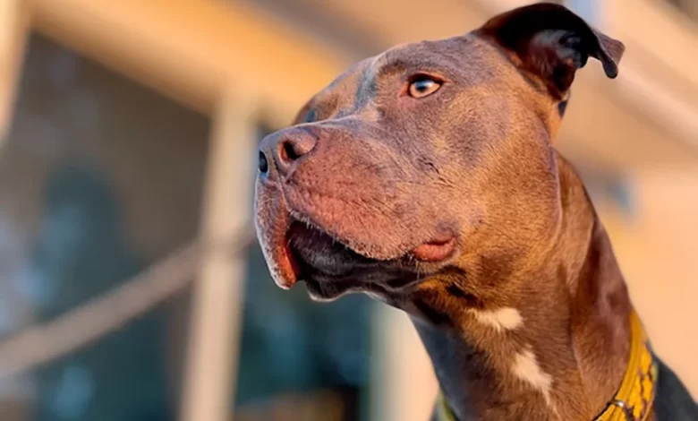

¿Cómo adoptar a un perro callejero?
Adoptar a un perro callejero tiene una infinidad de ventajas, pero también conlleva a ciertas responsabilidades. La primera de ellas es estar consciente de los pasos a seguir para concretar la adopción y los preparativos para la llegada al hogar de tu nuevo mejor amigo.
Desde Amor Incondicional te contamos cómo y dónde puedes adoptar a un perro sin hogar, así como los principales requisitos para asegurarte de que la adopción se haga correctamente.
¿Dónde adoptar un perro sin hogar?
Si te sientes listo para dar el próximo paso, entonces, será momento de decidir dónde adoptar a un perro callejero. La alternativa más recomendable y segura es recurrir a una protectora o refujio de animales.
Gran parte del trabajo de estas instituciones es garantizar que los perros en adopción estén preparados para recibir un nuevo hogar y familia. Además, allí encontrarás profesionales y voluntarios que con gusto te acompañarán durante el proceso de adopción, ya sea aclarando tus dudas o ayudándote en la adaptación del perro adoptado a su nuevo hogar.
Otra ventaja de adoptar a un perro callejero en una protectora o refugio, es que puedes realizar visitas antes de concretar la adopción. Así, tendrás la oportunidad de conocer los animales que puedes adoptar, su carácter, sus necesidades y cuidados específicos, su historia, etc.
Todo eso te ayudará a elegir un compañero más compatible con tu estilo de vida, el espacio que tienes disponible en tu hogar, el tiempo que puedes dedicar a su crianza, y tu propia personalidad.
Aquí hay una lista de refugios de adopción de mascotas en todo el país. Haga clic en un refugio para ver las mascotas disponibles para adopción.